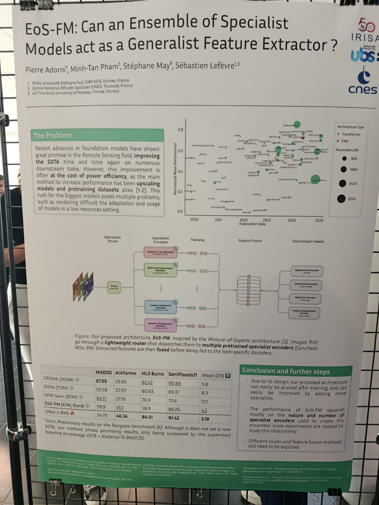

This is my International Summer School report: AI4EO symposium
Scroll down to find more!
Report on the International Summer School: AI4EO Symposium
Introduction
The AI4EO symposium started in 2022 as part of the International AI Future Lab AI4EO. After three successful editions in Munich, the symposium grew international and the 2025 edition took place in Rennes, Brittany, France, on September 11–12.
The symposium was organized by the OBELIX team at IRISA, with support from ESA Phi-lab, CNRS, ISPRS, the Cluster SequoIA, the International AI Future Lab AI4EO, the EMJM Copernicus Master in Digital Earth (which I take part), the Brittany region and the Rennes metropolitan area.
AI enhancing Earth Observation
This event brought together the scientific community (PhD students, postdocs, early-career and senior researchers) and industry partners working with artificial intelligence for Earth observation (AI4EO). Over two days, the program featured research highlights, invited talks, poster and oral sessions, panel discussions and social events.
It was great to have the opportunity to connect and learn form so many experts on the area!


“EoS-FM: Can an Ensemble of Specialist Models act as a Generalist Feature Extractor?” presentation
Over all the talks, presentations and chats that I had the pleasure to be part of during the symposium,the one that defenatly stood out was a poster presenting “EoS-FM: Can an Ensemble of Specialist Models act as a Generalist Feature Extractor?”. This work was presented by Pierre Adorni, a PhD student at the IRISA center and I decided that I wanted to dive deeper on the topic!

EoS-FM: What is the problem?
The poster and Pierre Adorni’s presentation about it started by showcasing the state of art on the newer foundation models (FM). Recent progress in FM has demonstrated significant potential for advancing applications in the remote sensing domain, transforming the paradigm of machine learning and AI for earth observation. However, the success of foundation models has largely relied on scaling up model size and pretraining datasets, a strategy that comes with considerable costs in terms of power efficiency and computational demand. Most of these models have a huge number of parameters, making it impossible to retrain and deploy on regular machines. Training such models is extremely expensive and resource-intensive and, unless pre-existing trained models and weights are used, many of these advances remain inaccessible. In their raw form, these models are too large, too expensive, too slow, too general or too risky to be used directly in real-world products or workflows. The problem faced on this poster relies on this trend towards ever-larger models therefore presents substantial challenges, particularly for adaptation and deployment in resource-constrained environments. The research reports the problem just explained before and tries to present an innovative possible solution for this problem.
EoS-FM: Why is it important?
Reducing the size of large foundation models is not a trivial task and, in many cases, due to their architectural design, it is simply not feasible. To address this challenge, this research introduces a novel and relevant solution: a new type of architecture aimed at improving the usability of foundation models by reducing both computational time and parameter count. The proposed approach, EoS-FM, is an architecture in which images are first processed by a lightweight router that dispatches them to multiple pretrained specialist encoders. This is where the model proves to be both innovative and valuable: users can select which encoders to employ according to their specific needs, effectively pruning the model for the task at hand. This flexibility makes EoS-FM significantly lighter than conventional foundation models, easier to adapt to diverse applications and more cost-efficient to train. By default, the model integrates 14 different encoders (including CaFFe, MiniFrance, and ImageNet, among others), yet it still maintains a much smaller parameter size compared to existing models. The innovative part of this architecture design is that the user can prune the model, augmenting or decreasing the number of encoders to meet the user’s need. While CROMA has 303M parameters, DOFA 112M and GFM-Swin 87M, EoS-FM operates with only 47M, and this is already a significant decrease that makes tasks like training or deployment easier. After the encoding stage, the extracted features are fused and then passed to task-specific decoders for fine-tuning, ensuring adaptability and efficiency across downstream tasks.
EoS-FM: 3 strengths and 3 weaknesses
The originality of EoS-FM is a clear strength, particularly in allowing users to select the most suitable encoders for their tasks, which reduces computational demands. Another positive factor about this model is that the results so far are promising, with performance only slightly behind larger foundation models in certain tasks. Also, because it is a work in progress and it has an open architecture, the pruning process is easy and recommended. For further steps on the development it is important to keep in mind that the choice of encoders and datasets matter and more isn’t always better. A lightweight router can cut costs while keeping performance high. These two are probably the greatest strengths of EoS-FM. However, there are some limitations: free and open-source models already exist, which questions whether this problem is as critical as presented.In fact, foundation models like Clay already provide pretrained weights and support multiple types of satellite imagery, addressing the challenge of local training and deployment—users only need to fine-tune the model’s head. Moreover, since the approach was still untested at the time, it remains uncertain whether EoS-FM will consistently outperform existing models. In practice, adapting the architecture for specific tasks may introduce extra work, and in some cases the parameter count could still approach that of other pretrained models. Finally, one could argue that simply fine-tuning the head of an existing FM might achieve similar results without requiring a new architecture, as seen explained before regarding Clay model, for example.
EoS-FM: Outlooking
Modern AI models can do outstanding task taking as input satellite images, but the better the model, the larger and slow it is and much more expensive to use. The EoS-FM approach tries a smarter solution, splitting images between smaller, specialized existing models and letting the users pick which ones to use. This makes the system faster, cheaper and easier to adapt while still keeping good performance. Studying this approach helps understand new ways to make AI for earth observation more practical and efficient.